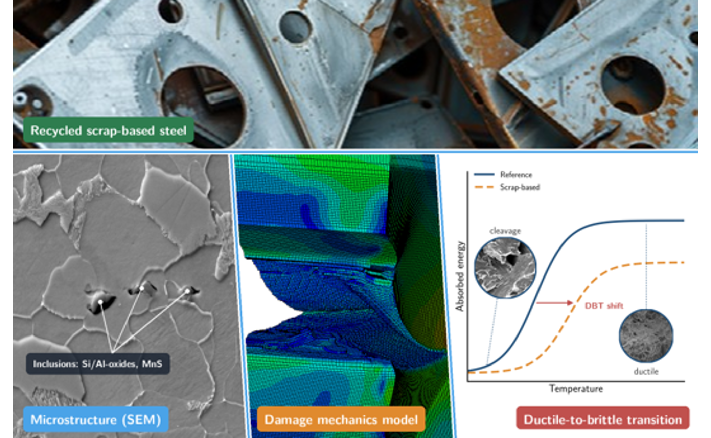
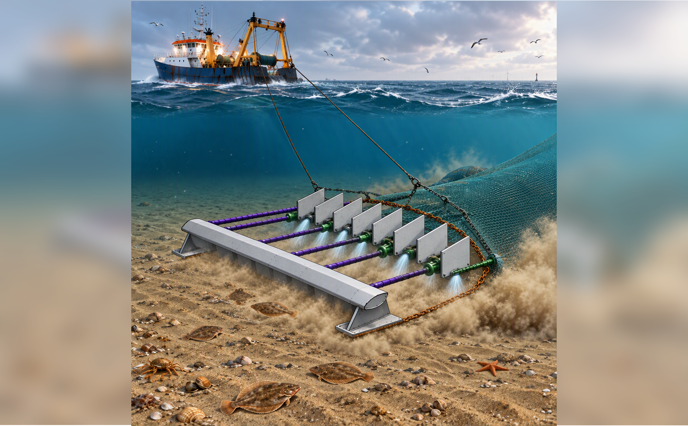
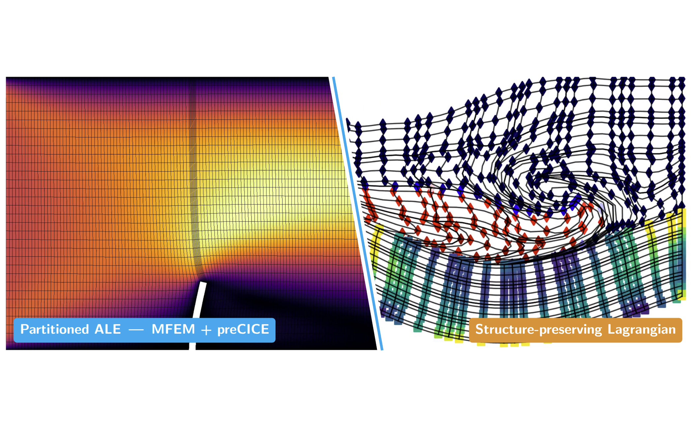
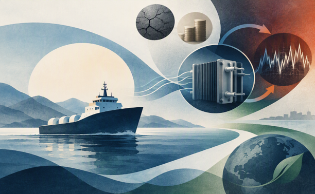
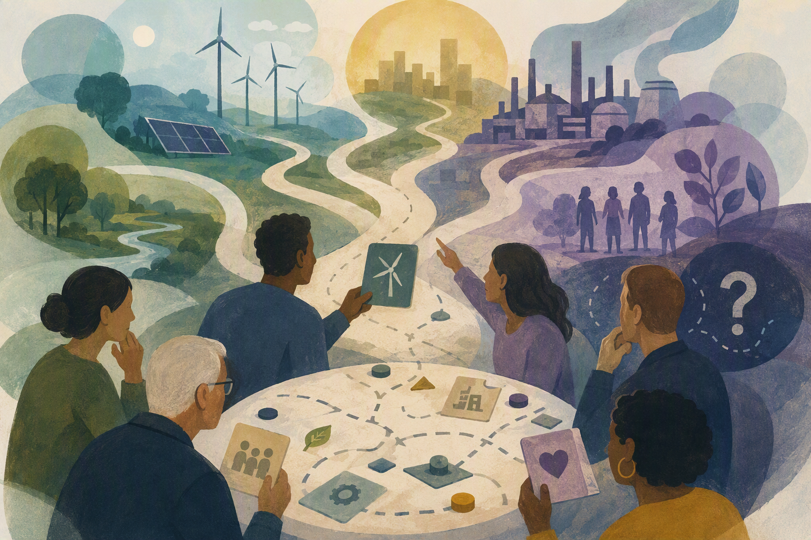

Recycled steel is central to decarbonizing construction, but scrap-based routes bring higher residual element contents and wider inclusion populations, adding uncertainty to their mechanical behavior. At service temperatures, this shifts the ductile-to-brittle transition and lowers the upper-shelf energy. Predicting this requires a fracture model with physically meaningful parameters, rather than ones fitted to a single test. In this talk, I show how Gurson-type ductile damage parameters can be derived from SEM inclusion statistics and transferred across loading rates and specimen geometries without recalibration. The real challenge in my PhD lies in the transition region, where a crack starts with ductile tearing and ends in cleavage. I discuss how coupling the ductile model with a multi-barrier cleavage model can capture this sequence and help predict the behavior of recycled steels.

Commercial demersal trawl fisheries commonly use tickler chains to stimulate flatfish from the seabed. However, these chains are a major source of physical disturbance to benthic habitats and can result in unwanted bycatch. To address these issues, a novel fishing concept is being developed that combines electrical detection of flatfish with targeted water jet stimulation. The objective is to reduce seabed disturbance while improving species selectivity. Experimental and numerical research has been conducted to identify and quantify the governing jet and sediment parameters controlling erosion and jet penetration in sandy seabeds. Together with ongoing research into flatfish behavior at Wageningen University, these findings provide the foundation for the design of selective water jet fishing gear. The resulting design opportunities, as well as the challenges, limitations, and remaining knowledge gaps associated with the concept, are explored.
Wind-assisted vessels have gained popularity in recent years as a result of industry-wide push towards maritime decarbonization. Designing such vessels can differ significantly from conventional design practices and requires careful attention to both hydrodynamic and aerodynamic aspects. As a result, the design space of such vessels can be overwhelmingly large and often unfeasible to thoroughly explore using existing methods. In this talk, we discuss an approach that structures the design problem into a hierarchy of local systems and subsystems to make exploration more manageable. The use of surrogate models and their modeling approach in this regard will be highlighted, along with a brief overview of the design and performance aspects of wind-assisted vessels.

Fluid–structure interaction (FSI) problems, such as aeroelastic flutter, wind turbine blades under extreme loads, and flexible solar panels floating on the water surface, require numerical tools that are both accurate and robust. In this talk, I present two complementary routes towards high-fidelity FSI simulation, linked by how the conservation laws are derived in different frames of reference. The first approach is application-oriented and partitioned. An MFEM-based incompressible flow solver, using a residual-based variational multiscale (RBVMS) formulation in an arbitrary Lagrangian–Eulerian (ALE) framework, is coupled to a structural solver through the preCICE library. The approach is demonstrated on the perpendicular flap benchmark, illustrating the practical challenges of coupling high-fidelity fluid and structural solvers. The second approach is more theoretical and centres on a structure-preserving monolithic formulation. Both the fluid and solid are described in a Lagrangian frame, in which the convective terms vanish, and the equations are pulled back to a fixed reference configuration. The resulting variational formulation is derived from the minimisation of a Hamiltonian. A structure-preserving discretisation then leads to a fully coupled scheme that conserves mass, momentum, and energy at the discrete level. This provides a unified framework for structure-preserving discretisation of coupled multi-physics problems.

The long-term durability and cost are those challenges for the commercialization of a fuel cell which researchers have been trying to answer in different ways since many decades. In this talk, I will provide an overview of a technique known as "accelerated stress testing (AST)" which is a specialized experimental protocol designed to accelerate the degradation of fuel cell components. I will introduce this topic by discussing first about the research problem in the maritime perspective and then the research question which I had formulated.

Hydrogen futures play a central role in contemporary energy transition governance, yet they are frequently shaped by reductionist assumptions about societal priorities and values. Because the future is unwritten and our norms and beliefs evolve alongside (un)expected events, embracing normative uncertainty is essential. Participatory scenario planning offers a promising framework for a more humble energy technology governance, yet it remains underutilized in hydrogen transitions. To us, being ‘humble’ means accepting that normative uncertainty is unavoidable and recognizing that people hold conflicting values, priorities change over time, and we rarely have absolute moral clarity when planning for the future. The method we are developing tries to better embed humility, as, unlike traditional futuring approaches that force convergence on preferred pathways or artificially stabilize expectations, participatory scenario planning prioritizes inclusiveness, multiplicity, contingency, and divergence. In this workshop, we would like to try out our newly developed participatory scenario planning game with the participants by looking at currently used hydrogen futures and breaking them apart in their sub-components. What do these futures promise? Who are important players? What values are deemed important to protect? The workshop has a twofold aim: first, to hope to gather insights into what participants deem critical both within and outside current hydrogen visions; and second, to collaboratively evaluate the effectiveness of the game itself as a tool for cultivating humble governance.